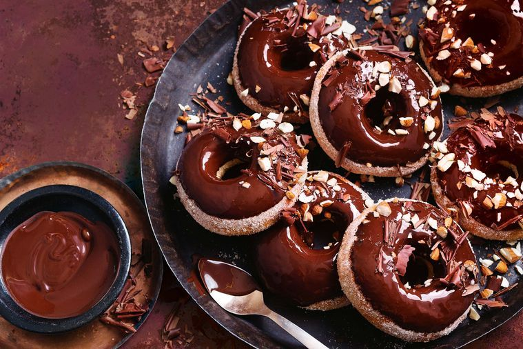

Home
Doughnut Recipe

Image by delicious.
Chocolate Coated Doughnuts
Delicious homemade chocolate coated doughnuts, made with buttermilk,
glazed chocolate, sprinkled with nuts and chocolatey flakes.
Ingredients
Icing
- 100ml milk
- 200gm dark chocolate
- 2 ½ tablespoons whisky
- ⅔ cups (150gm) caster sugar
- 2 teaspoons ground cinnamon
- Chopped almonds to serve
- Dark chocolate, shaved, to serve
Doughnuts
- 2 ½ teaspoons dried instant yeast
- ¼ cup (60ml) milk, warmed
- ⅔ cup (150gm) caster sugar
- 3 ¼ cups (485gm) plain flour
- ⅔ cup (165gm) buttermilk
- 1 egg, lightly beaten
- 40gm unsalted butter, melted, cooled slightly
Steps
-
For the doughnuts, combine yeast and warm milk with a pinch of sugar in
a bowl. Set aside for 10 minutes or until frothy. Combine the flour and
remaining sugar with a pinch of salt in the bowl of an electric mixer
fitted with a dough hook. Gradually add the yeast mixture, buttermilk,
egg and butter, and knead on low speed for 5 minutes or until smooth and
elastic. Place dough in an oiled bowl (the dough will be quite wet),
cover with plastic wrap and set aside in a warm place for 1-1 1/2 hours
until doubled in size.
-
Turn out the dough onto a floured work surface and knock down. Roll into
a sausage and cut into 10 equal-sized pieces. Roll each piece of dough
into a smooth ball. Divide between two baking paper-lined baking trays.
Lightly flatten each ball into a 9cm disk. Using a 3.5cm round cutter,
cut out centres of dough and discard. Lightly cover doughnuts with oiled
plastic wrap. Set aside in a warm place for a further 1 hour or until
risen.
-
Preheat the oven to 200C. Baking one tray at a time, bake the doughnuts
for 8-9 minutes until light golden and cooked through. Remove from oven
and transfer to a wire rack to cool slightly.
-
Meanwhile, for the glaze, combine milk, chocolate, whisky and 1
tablespoon sugar in a heatproof bowl set over a pan of gently simmering
water (don’t let the bowl touch the water), stirring until melted and
combined. Remove from heat. Cool slightly.
-
Combine cinnamon and remaining sugar in a bowl. Wet a pastry brush with
milk, then brush over doughnuts.
- Toss the doughnuts in sugar mixture, then dip the tops in glaze.
-
Serve doughnuts warm, sprinkled with almonds and shaved chocolate, with
any remaining glaze on the side.
Copyright, all rights reserved to the respective copyright owners:
Recipe content on this page has been copied from the "Baked Buttermilk
Doughnuts with Whisky Chocolate Glaze" recipe sourced from
delicious.
The content of this page is used for educational purposes of building a
recipes website for
The Odin Project.